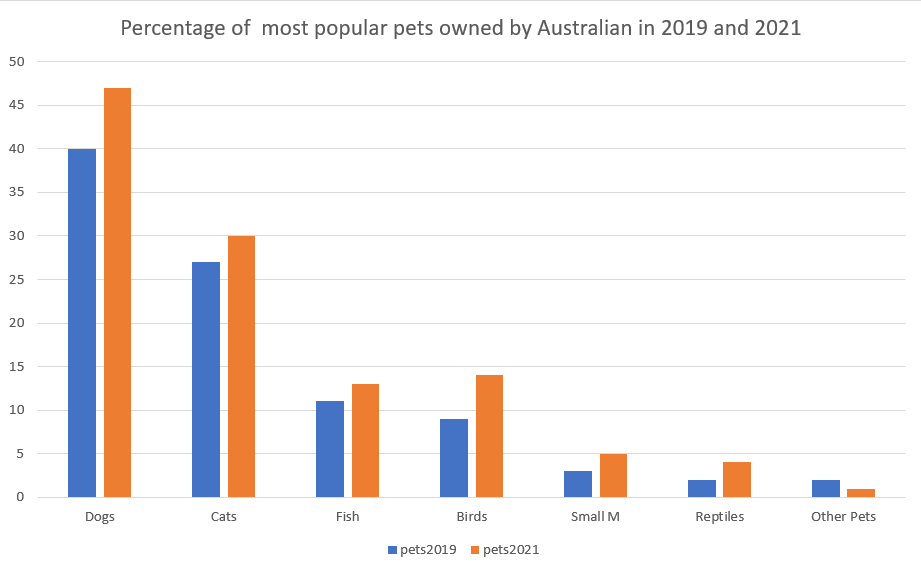

A report from Animal Medicines Australia (AMA) has found that many Australians took the opportunity to introduce a pet into their household during the pandemic. Their survey indicated that there was a significant increase in the percent of households taking in a new dog, fish or bird. Their research also indicated that pets had a number of positive influences on their lives such as:

With the increase in pet ownership the AMA are encouraging policy makers to consider the needs of companion animals and their owners when considering rental, strata and body corporate regulations are well as accepting animals in public places and transport.